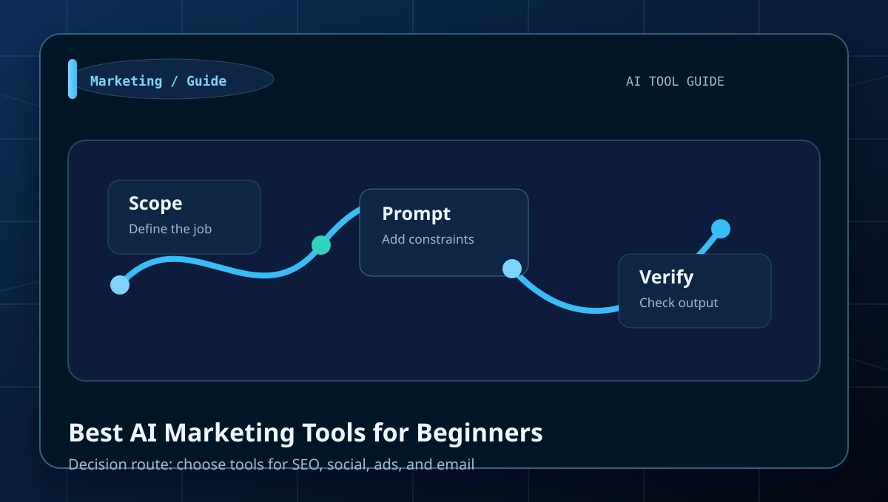
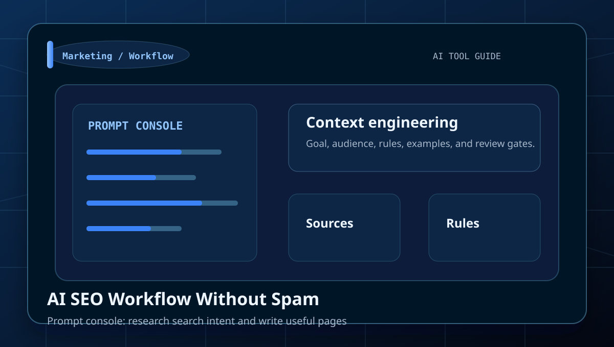
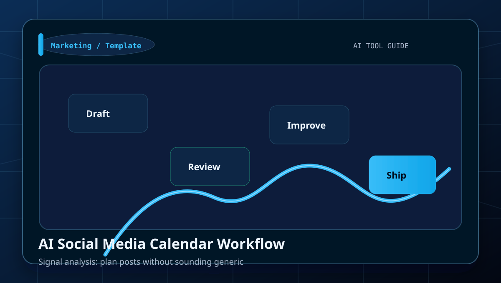
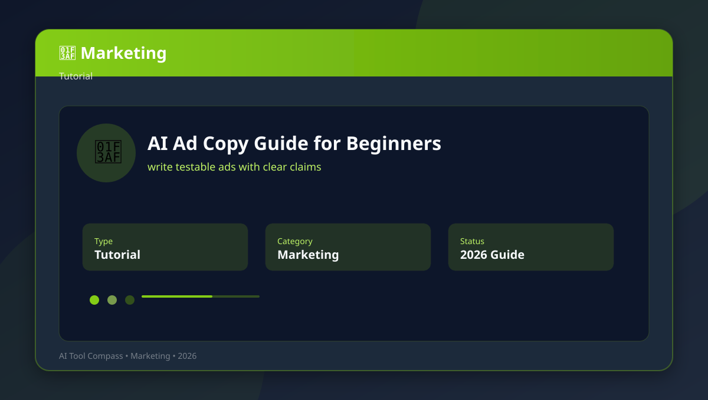
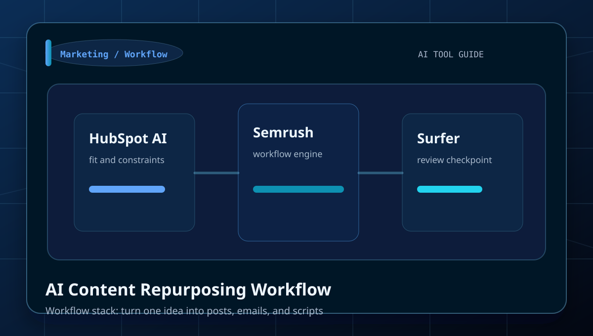
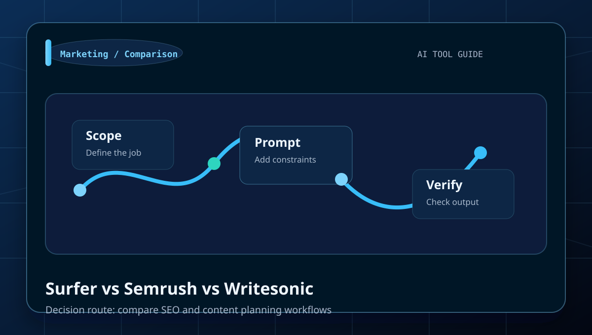
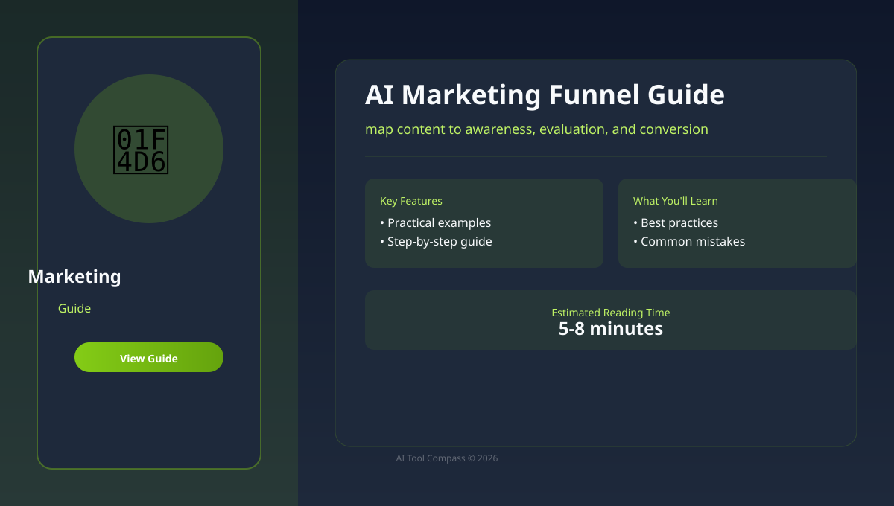
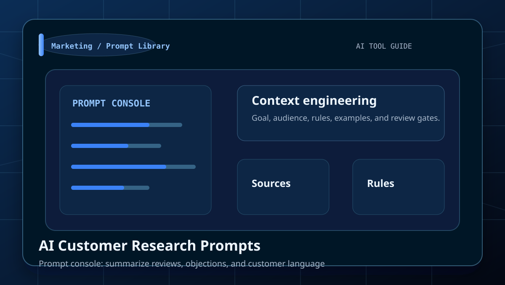
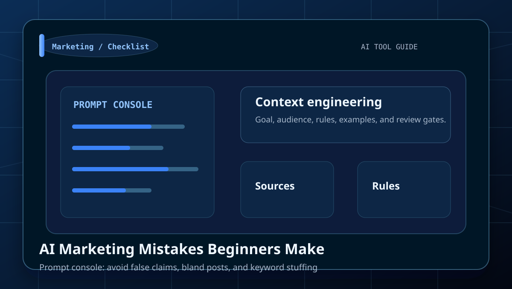
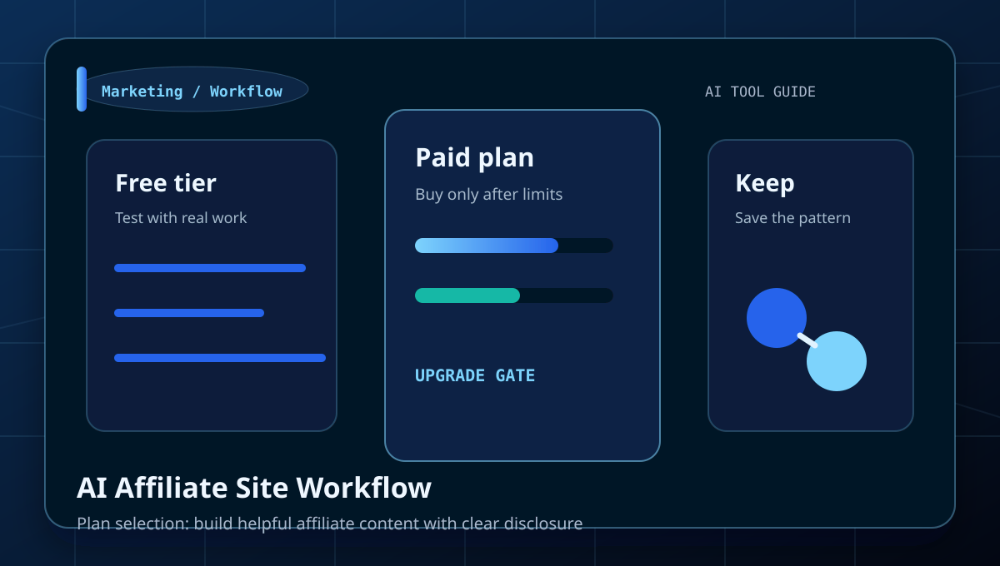

Category
AI Marketing Guides
Tutorials, comparisons, prompt examples, and beginner workflows for SEO, social media, ads, funnels, analytics, and campaign planning.
Best for
SEO, social media, ads, funnels, analytics, and campaign planning.
HubSpot AI, Semrush, Surfer, Buffer AI
Use the comparison tables to decide which tool fits each job.
Library
All AI Marketing articles

Best AI Marketing Tools for Beginners
Learn how to choose tools for SEO, social, ads, and email with a clear workflow, examples, and beginner mistakes to avoid.

AI SEO Workflow Without Spam
Learn how to research search intent and write useful pages with a clear workflow, examples, and beginner mistakes to avoid.

AI Social Media Calendar Workflow
Learn how to plan posts without sounding generic with a clear workflow, examples, and beginner mistakes to avoid.

AI Ad Copy Guide for Beginners
Learn how to write testable ads with clear claims with a clear workflow, examples, and beginner mistakes to avoid.

AI Content Repurposing Workflow
Learn how to turn one idea into posts, emails, and scripts with a clear workflow, examples, and beginner mistakes to avoid.

Surfer vs Semrush vs Writesonic
Learn how to compare SEO and content planning workflows with a clear workflow, examples, and beginner mistakes to avoid.

AI Marketing Funnel Guide
Learn how to map content to awareness, evaluation, and conversion with a clear workflow, examples, and beginner mistakes to avoid.

AI Customer Research Prompts
Learn how to summarize reviews, objections, and customer language with a clear workflow, examples, and beginner mistakes to avoid.

AI Marketing Mistakes Beginners Make
Learn how to avoid false claims, bland posts, and keyword stuffing with a clear workflow, examples, and beginner mistakes to avoid.

AI Affiliate Site Workflow
Learn how to build helpful affiliate content with clear disclosure with a clear workflow, examples, and beginner mistakes to avoid.